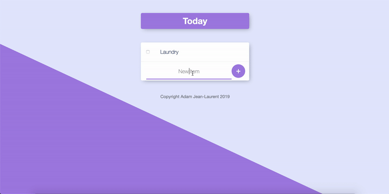

Adam Jean-Laurent
I'm studying Computer Science at the University Of Rhode Island. I've been a lifelong builder, whether it be with Legos, Bionicles, or puzzles. I've also been a lifelong lover of tech, especially computers, and Computer Science has become the embodiment of these two passions. I'm an aspiring software engineer with a strong interest in backend development. I have experience building fullstack web applications through side projects i've uploaded to my Github account, agile methodology, and using git in a team setting.
Experience
New Technologist Intern
- Worked on a team of fellow interns to build an iOS application using Agile methodology and frameworks.
- Learned industry software development practices such as, code reviews, unit testing, and scrum.
- Worked as a backend developer, built a system to allow iOS application to read and write to native iOS calendar, and perform other CRUD operations.
Computer Science Tutor
- Hold weekly tutoring sessions assisting students in Data Structures & Algorithms and Object-Oriented Programming Coursework.
- Perform code reviews to facilitate in student development.
Information Technology Consultant
- Provide URI students, staff, and faculty with professional computing and networking services, such as troubleshooting, reformatting, Ethernet port-teching, and other software/hardware issues.
Education
University of Rhode Island
GPA: 3.43
Coursework:
Online Courses
Udemy: The Complete Web Developer Bootcamp 2019
Coursera: Web Applications For Everybody
Projects
YouTube Sync

A Friend and I love watching youtube videos together. The problem is that we live a few states away from eachother. We try to synchronize our watching experience over the phone, but despite our best efforts, one of us is always a few seconds behind or in front of the other.
I decided to build a tool to fix this issuse, and this is how YouTube Sync came to be. It uses web sockets and the Youtube IFrame Player API to allow multiple users to watch the same YouTube video at the same time, and stay synchronized when pausing, playing, and skipping.
Pomodoro Study

I'm always trying to be a more productive person, and while watching a TED talk I learned about the Pomodoro study technique. I fell in love with it and used it to study for finals exams, cleaning my room, or whatever other type of work I was doing. But I kept jumping from app to app to website to website trying to find software that had all the features I wanted, the biggest being a way to visually track my progress through statistics.
After searching for a while, I realized, "I'm a programmer I can make it myself!". So that's why I created Pomodoro Study, A web application that helps users practice the Pomodoro study technique by allowing them to view their study data visually.
Dynamic TODO List
I love using sticky note/to-do list apps, but I couldn't fine one that easy allowed me to have different to-do list for different activites. For example one to-do list for a club, one to-do list for classes, one to-do list for reading.
So I built this to-do list web application that allows for dynamic to-do lists to be created on the spot.
Skills
- Using Git Repos Within A Team
- Object Oriented Programming
- Model-View-Controller Pattern
- Agile Development
Interests
On the software side, I really enjoy building web applications, I do a lot of fullstack work on side projects. I enjoy building tools that automate a tedious task, that and/or help users improve their life and be more productive.
Outside of software, you might find me reading a book, playing some basketball, or deeply invested in a videogame.